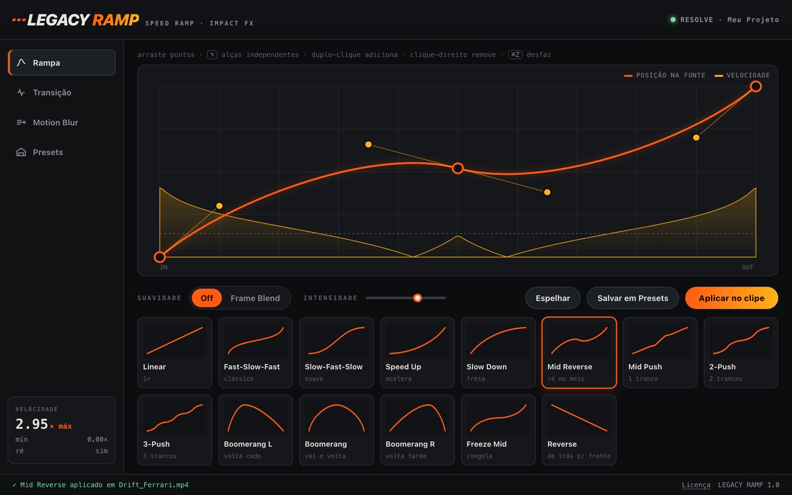
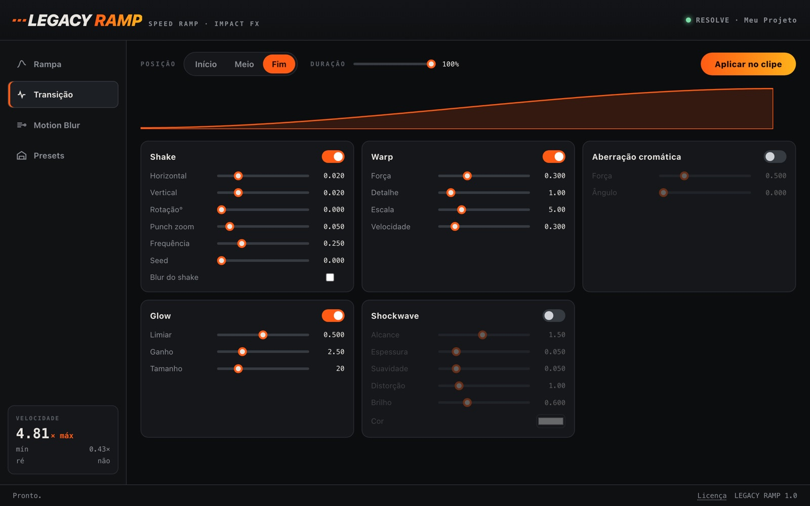
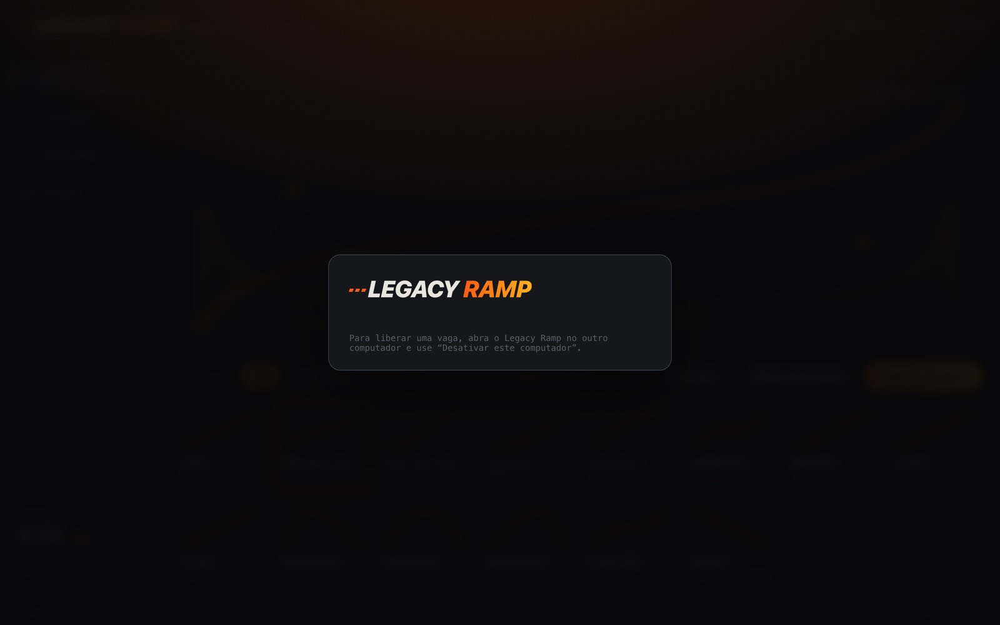

Editor de curva de verdade
Arraste pontos e alças, adicione com duplo-clique, desfaça com ⌘Z. A curva de velocidade aparece embaixo, com o pico em ×.
Para DaVinci Resolve · Mac e Windows
Desenhe a curva de velocidade, escolha um dos 14 presets e aplique direto no clipe da timeline. Shake, warp, glow e motion blur nas transições, sem montar nó por nó no Fusion.

Arraste pontos e alças, adicione com duplo-clique, desfaça com ⌘Z. A curva de velocidade aparece embaixo, com o pico em ×.
Fast-Slow-Fast, Slow-Fast-Slow, Speed Up, Slow Down, Mid Reverse, Pushes, Boomerangs, Freeze Mid e Reverse, com intensidade ajustável.
Shake, warp, aberração cromática, glow e shockwave, no início, no meio ou no fim do clipe, com duração ajustável.
Linear, centrado, zoom ou radial, seguindo o mesmo envelope dos efeitos para borrar no momento certo.
Um único retime por clipe e efeitos que só processam quando estão ativos. Sem dezenas de nós escondidos pesando o Fusion.
Guarde as curvas que você mais usa, exporte e importe entre computadores.


Preço de lançamento em breve
Sim. No Studio ele abre como painel em Workspace › Workflow Integrations. No gratuito, esse menu não existe; o Legacy Ramp abre por Workspace › Scripts e mostra a mesma interface no navegador. Nesse caso é preciso ter o Python 3 instalado (python.org).
macOS (Apple Silicon e Intel) e Windows 10/11, com DaVinci Resolve 19 ou mais recente (testado no Resolve 21).
Cada serial fica ativo em até 2 computadores ao mesmo tempo. Para trocar de máquina, use Licença › Desativar este computador na antiga e ative na nova.
Só para ativar. Depois disso o Legacy Ramp confere a licença quando há conexão e continua funcionando até 14 dias sem internet.
Não. O Legacy Ramp trabalha na composição Fusion do clipe na timeline; o arquivo de mídia não é modificado e nós que você já tenha nessa composição são mantidos.
Logo após a compra, no e-mail do recibo, junto com o link para baixar o instalador.